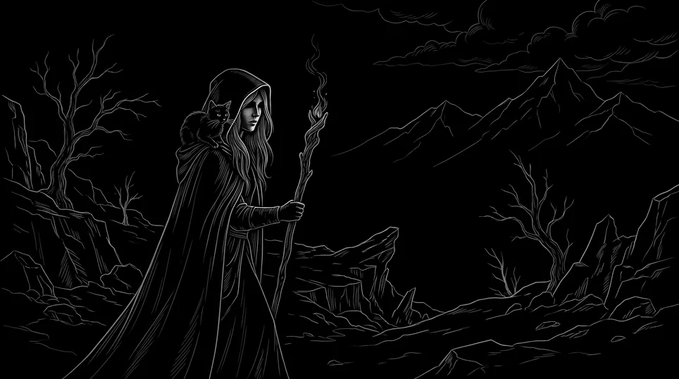

無関係に見えるシステム同士の、隠れたつながりを見抜く。常時発動。解呪不可。
既存の手法に挑むあらゆる判定で有利。
近くの仲間から習熟を吸収する。持続時間は接した長さに比例。
対象の仲間1人に鼓舞ダイスを1個与える。聞き手はWISセーヴに失敗すると心を揺さぶられる。夜明けに回復。
あらゆる会話に付与可能。対象の「もしも」が、細部まで作り込まれたもうひとつの現実へと広がっていく。
ひとりの時間で充電。呪文スロットをすべて回復。次の大休憩までWIS+2。
仲間を秘術の媒介に変える。対象は術者に代わって「吟遊詩人の鼓舞」を使える。同時に維持できる媒介の数に上限なし。
失敗しても、より良い形で起き上がる。勢いをすべて次の挑戦へ。落胆無効。伏せ状態にならない。
製品、論文、プラットフォームを、ゼロから公開まで漕ぎつける。四半期に一度まで。
発動条件：何らかのプロジェクトを計画したとき。範囲が2分野ぶん広がる。抑制不可。
発動条件：プレッシャー、または曖昧な状況。全能力値+1。退屈なルーティン中は全能力値-1。
発動条件：未知のアイデアに出会ったとき。会話が終わる前に、新しいコラボレーションを召喚する。
未知の分野でも一時的に習熟を得る。副作用：毎月3つの新プロジェクトを始めてしまう。
休息行動が創作の成果に変換される。大休憩には2倍の時間がかかる。のんびり不可。
どんな調でも即興演奏できる。楽譜不要。次の大休憩までPER+2。
新参者から「よそ者」デバフを解除する。永続オーラ、半径30フィート。
若手の仲間に、自信と方向性+2のバフ。効果は無期限に持続。対象は15人以上。
範囲内の仲間全員に鼓舞ダイスを与える（全体効果）。時差、言葉の壁、組織の縦割りを無視。季節に一度まで。
600人以上の集いを企画・運営する。あらゆる段取り判定で有利。年に一度まで。
生活の拠点を新しい州や国へ移す。大規模な段取り判定が必要。ホームシック無効。
発動条件：専門用語を検知したとき。あらゆる聴衆から「専門用語」デバフを解除する。ComiConでも有効。